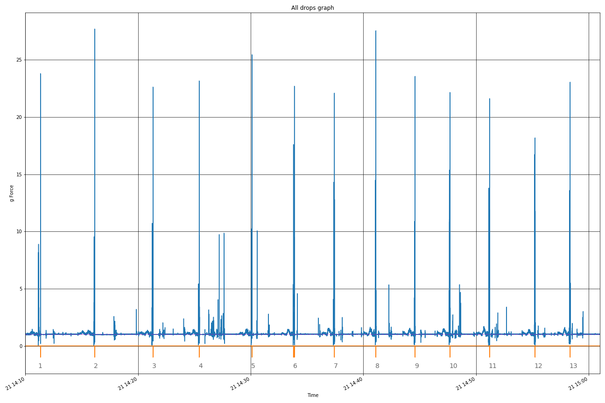

2020/12/27 - fred - v 0.1
The goal is to have a idea of the force apply on the mass during an EN 12491 Load test session. For that an accelerometer has been installed on the dummy mass.
This is the second session with sensor ( link to session 1)
This is an overview of the full log . With the index of the drop.
Note : , right click , view image to explore all the graph

Refer to session 1 report for drop detail analysis
This table resume all the test parameters and the calculated force :
force [daN] = mass [kg] * max_g * g [m/s2]| Drop Id | Mass [Kg] | Pass/Fail | Max g force [g] | Start_drop [hh:mm:ss.s] | Start_opening [hh:mm:ss.s] | End_opening [hh:mm:ss.s] | End_drop [hh:mm:ss.s] | nan | Force [daN] | |
|---|---|---|---|---|---|---|---|---|---|---|
| 1 | 1 | 230 | ? | 8.8913 | 14:11:07 | 14:11:08 | 14:11:14 | 14:11:22 | ?? | 2006.14 |
| 2 | 2 | 220 | ? | 9.54766 | 14:16:04 | 14:16:05 | 14:16:07 | 14:16:10 | ?? | 2060.58 |
| 3 | 3 | 220 | ? | 10.7179 | 14:21:13 | 14:21:14 | 14:21:18 | 14:21:20 | ?? | 2313.14 |
| 4 | 4 | 210 | ? | 5.42824 | 14:25:20 | 14:25:21 | 14:25:24 | 14:25:28 | ?? | 1118.27 |
| 5 | 5 | 140 | Pass | 10.2318 | 14:30:02 | 14:30:03 | 14:30:06 | 14:30:08 | squared (ozone) | 1405.23 |
| 6 | 6 | 125 | ? | 17.6052 | 14:33:46 | 14:33:47 | 14:33:50 | 14:33:54 | ?? | 2158.83 |
| 7 | 7 | 125 | ? | 14.3026 | 14:37:20 | 14:37:21 | 14:37:24 | 14:37:27 | ?? | 1753.86 |
| 8 | 8 | 120 | ? | 14.4911 | 14:41:02 | 14:41:03 | 14:41:06 | 14:41:08 | ?? | 1705.89 |
| 9 | 9 | 115 | ? | 10.8881 | 14:44:31 | 14:44:32 | 14:44:34 | 14:44:36 | ?? | 1228.34 |
| 10 | 10 | 115 | ? | 15.3751 | 14:47:36 | 14:47:37 | 14:47:39 | 14:47:42 | ?? | 1734.55 |
| 11 | 11 | 100 | ? | 13.797 | 14:51:06 | 14:51:07 | 14:51:10 | 14:51:13 | ?? | 1353.49 |
| 12 | 12 | 90 | ? | 16.7369 | 14:55:10 | 14:55:11 | 14:55:13 | 14:55:15 | ?? | 1477.7 |
| 13 | 13 | 80 | ? | 13.5866 | 14:58:16 | 14:58:17 | 14:58:19 | 14:58:23 | ?? | 1066.28 |
Note:
All graphs:
The End !